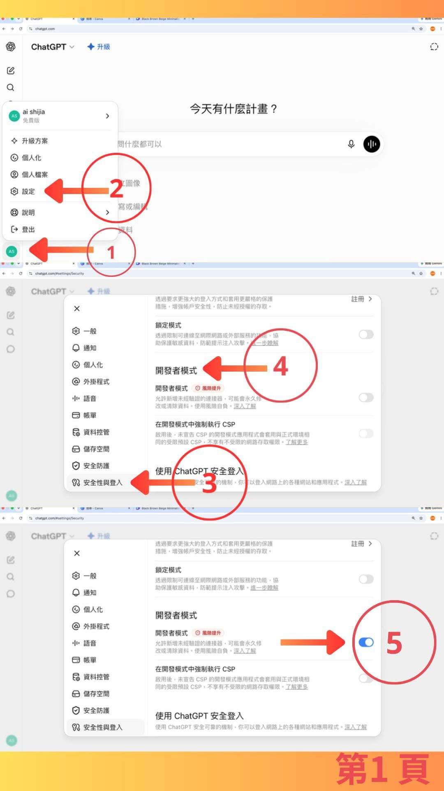

實價AI Threads｜ChatGPT 串接內政部實價登錄成交行情的房價分析工作流
實價AI（@gu_jun_you）分享「ChatGPT 接上內政部實價登錄成交行情」的流程，主張可以把成交明細交給 ChatGPT 做整理與分析，每日免費 5 次；訂閱則沒有次數限制。作者補充，全台可查，預設查詢中古屋，能分析成交單價範圍、筆數、屋齡區間與型態比較。

圖片可見資訊
截圖顯示 ChatGPT 網頁版設定流程：點左下帳號、進入「設定」、選「安全性與登入」、找到「開發者模式」並開啟。這應是為了讓 ChatGPT 能連接外部應用或工具。
官方/可靠來源查核
- 內政部不動產交易實價查詢服務網：官方查詢入口。
- 內政部不動產成交案件實際資訊資料供應系統：提供批次電子資料。
- 政府資料開放平臺：本期發布之不動產實價登錄批次資料。
- shijia-ai.com：自稱把內政部實價登錄整理成可對話、可查詢、可延伸分析的介面。
適合怎麼用
- 賣屋前：先查同區域、同型態、相近屋齡成交區間。
- 買屋前：確認開價與近期成交資料差距。
- 房仲/顧問：快速整理成交明細、單價帶、屋齡帶與產品型態差異。
- 課程案例：示範「公開資料 + AI 查詢介面 + 對話分析」的 MCP / 外掛應用。
重要風險與界線
- 實價登錄資料有揭露時間落差、資料欄位限制與特殊交易註記問題。
- AI 分析可協助整理，但不是正式不動產估價、法律、稅務或投資建議。
- 買賣決策仍需人工覆核：屋況、樓層、座向、車位、社區管理、貸款條件與稅費。
- 第三方工具連接 ChatGPT 時，要確認資料使用條款與隱私政策。
來源
- 實價AI Threads：ChatGPT 接上內政部實價登錄成交行情。
- shijia-ai.com：實價AI 官網。
- 內政部不動產交易實價查詢服務網。
- 政府資料開放平臺：實價登錄資料集。